La brutal escalada terrorista ha puesto al PNV entre la espada etarra y la pétrea pared del Gobierno.
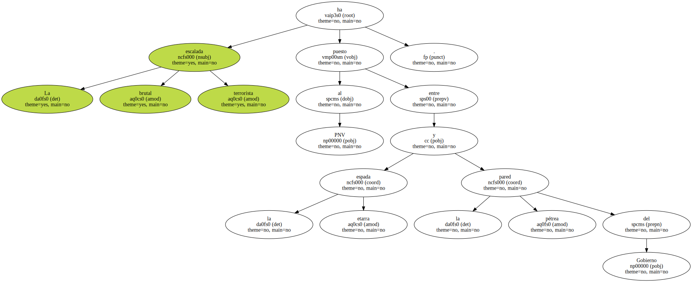Encorsetados por su presencia en el Pacto de Lizarra y por la falta de apoyo parlamentario , los nacionalistas vascos no abjuran del diálogo con HB , pero buscan una salida que el PP procura cegar.
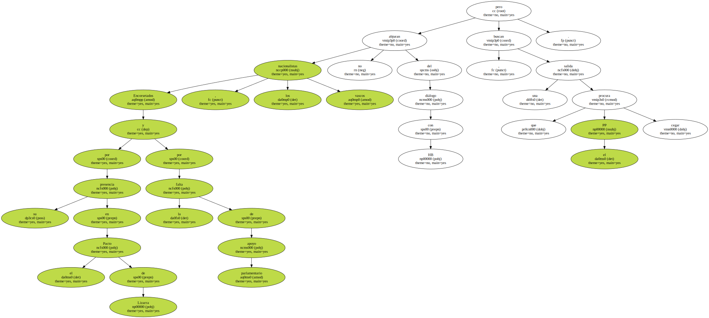Durante la tregua , Jaime Mayor Oreja situaba al PNV en la encrucijada de regresar junto a los demócratas o seguir con los violentos.
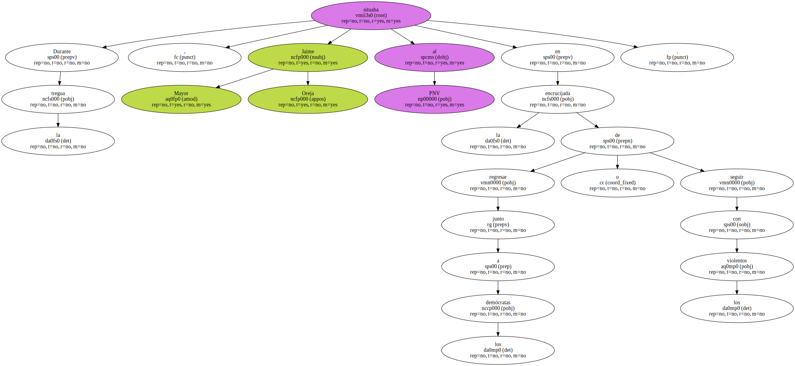Tras 12 asesinatos en siete meses , el Gobierno crucifica sin complejos a Xabier Arzalluz acusándole de legitimar a ETA.
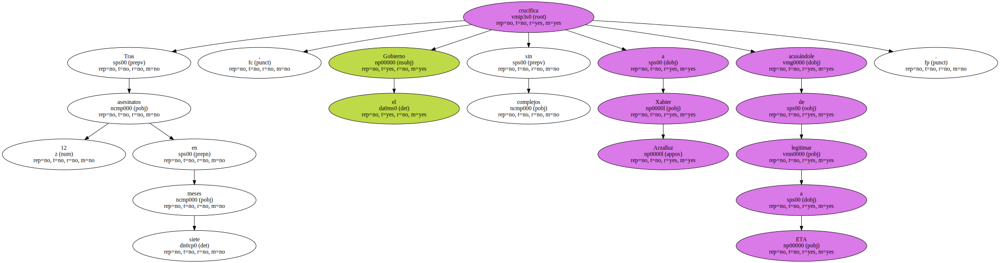Una operación cuyo objetivo último es derrotar al nacionalismo en las urnas.
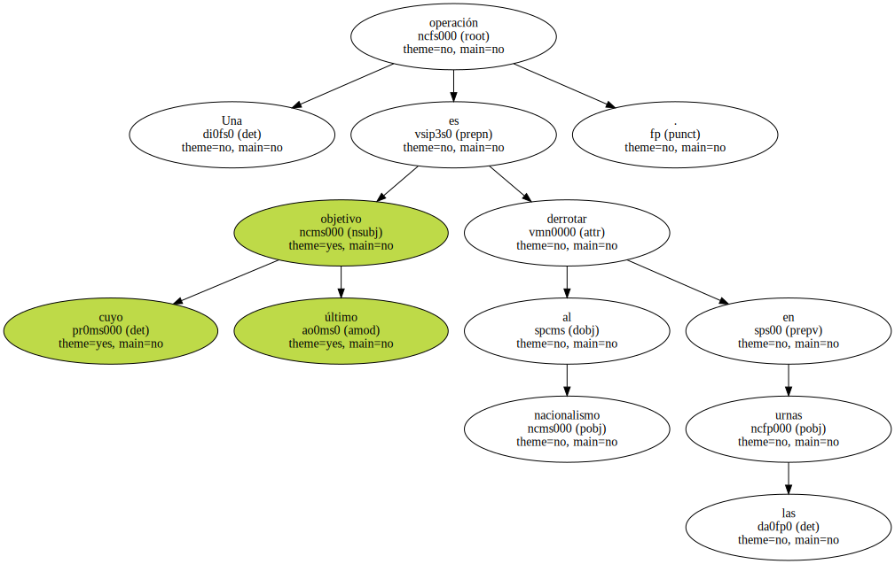La ofensiva etarra anima al Gobierno a seguir criminalizando al PNV , mientras el PSOE intenta mediar cara a futuros pactos.
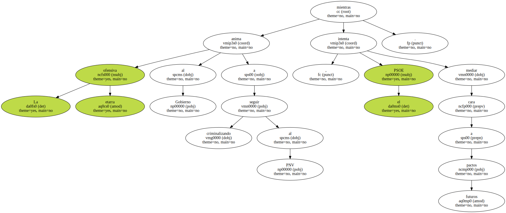ETA ha confirmado este verano las más macabras previsiones : entre julio y agosto , siete muertos , 20 heridos y varios atentados frustrados por el azar o la acción policial.
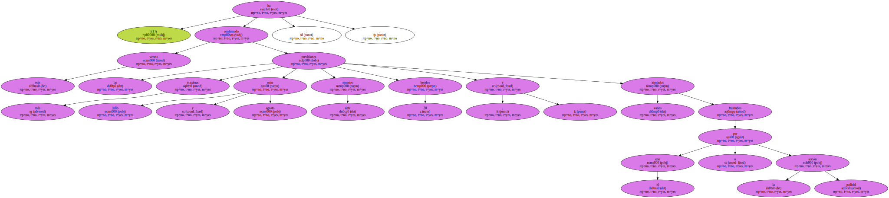Como antes de la ya olvidada tregua , cada asesinato ha ido acompañado de un cansino rosario de condenas , pero también del creciente hostigamiento político a un Partido Nacionalista Vasco ( PNV ) que , si surte efectos la estrategia del Gobierno , pagará muy cara la firma que estampó en Lizarra.
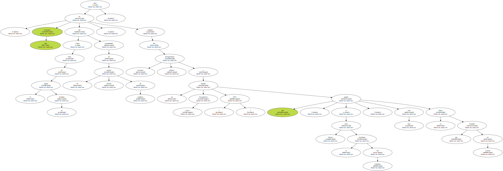El ministro del Interior , Jaime Mayor Oreja , lo reconoció sin ambages el pasado julio , en una comparecencia parlamentaria : " Neutralizar la ofensiva soberanista del nacionalismo vasco es una política de Estado ".
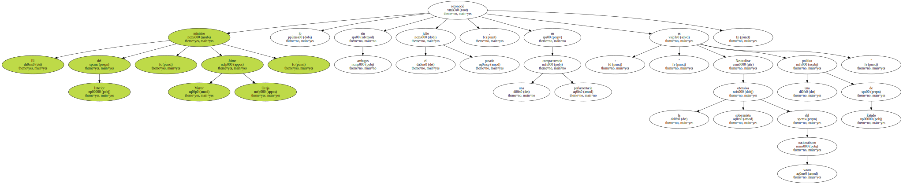La afirmación del titular de Interior obedece a la convicción , compartida por José María Aznar , de que la organización terrorista ETA no desaparecerá jamás mientras cuente con la complicidad , siquiera por omisión , de un Gobierno vasco controlado por el nacionalismo.
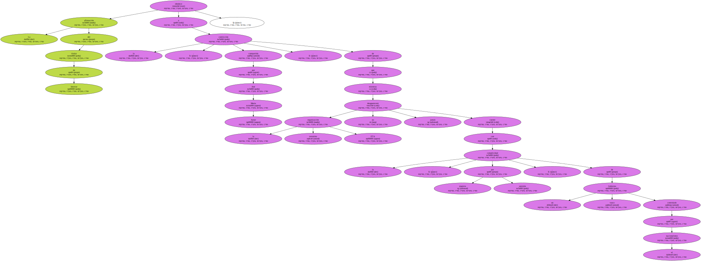El desafío del Ejecutivo central , pues , es el mismo que el del Partido Popular ( PP ) : desgastar al PNV hasta arrebatarle en las urnas la hegemonía política del País Vasco.
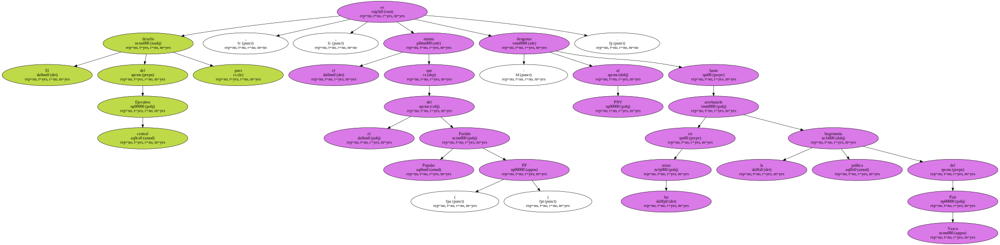Puestos a desangrar al herido , lo primero es no permitir que sanen sus cicatrices , hurgar en ellas.
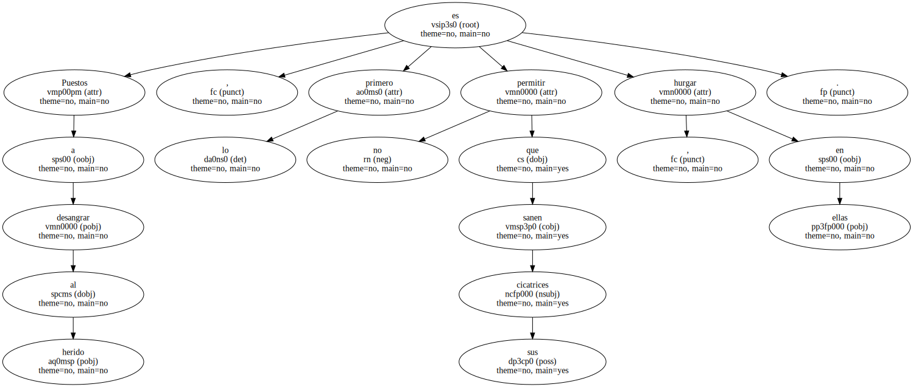El partido que con pulso cada vez menos firme dirige Xabier Arzalluz ha dialogado con Herri Batasuna ( HB ) desde la noche de los tiempos democráticos , sin que ello fuera un obstáculo para que , en 1996 , Aznar suscribiera con él un acuerdo de gobernabilidad que acabó resultando muy fructífero para las arcas de Euskadi.
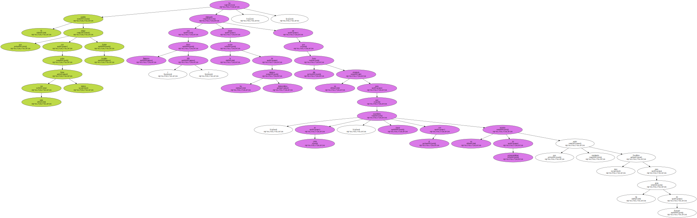Ahora , sin embargo , la mera voluntad de no excluir a la coalición aberzale es motivo suficiente para satanizar al PNV.
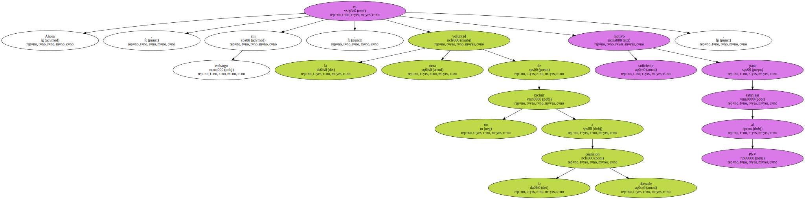Hasta hace escasas semanas , el Gobierno no se cansaba de exigir a los peneuvistas que enterraran el Pacto de Lizarra , el documento que precedió a la tregua de ETA y en el que todas las fuerzas y asociaciones nacionalistas esbozaron un plan de paz basado en la construcción nacional de Euskal Herria.
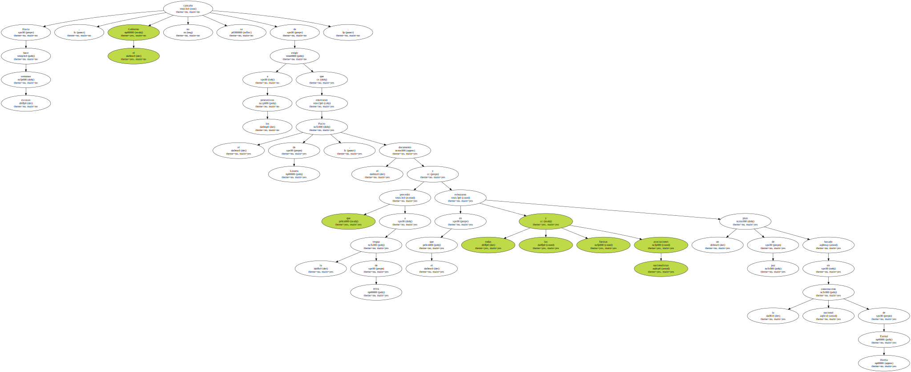De nada sirvió que , el pasado 15 de agosto , el propio Arzalluz declarara que la violenta reaparición de ETA había " invalidado " el foro de Lizarra : el PP le exigió a continuación que abdicara también de los principios que inspiraron aquel acuerdo.
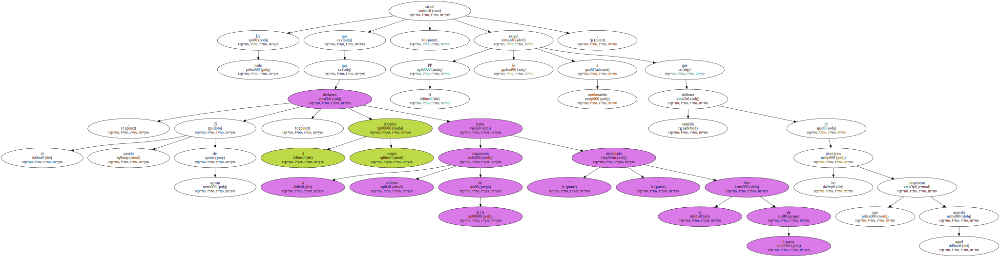Es decir , que renunciara a hablar con HB mientras esta coalición no condene los atentados etarras.
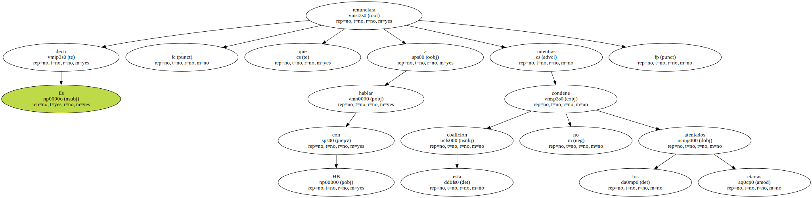La incesante presión del Ejecutivo está teniendo un doble efecto en las filas peneuvistas.

Por una parte , al exigir al PNV una rectificación en toda regla de la estrategia política que a principios de año aprobó en su asamblea , propicia que los dirigentes nacionalistas se enroquen en sus postulados para conjurar toda imagen de claudicación ; por la otra , alienta a los disidentes a plantar cara a Arzalluz y reforzar ante el electorado la imagen de división interna.
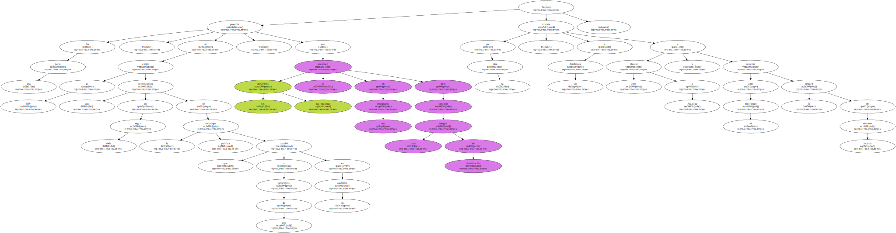El parlamentario Joseba Arregi , los hermanos Guevara y hasta Iñaki Anasagasti han levantado la voz , pero Arzalluz ha acallado las críticas de forma abrupta : " Donde hay patrón no manda marinero ".
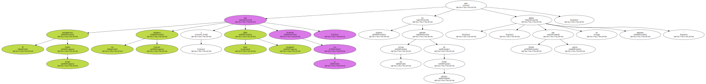Desde el palacio de Ajuria Enea , el lehendakari Juan José Ibarretxe se ve obligado a hacer toda clase de malabarismos para intentar salvar su compleja situación : desprovisto ya de la muleta de Euskal Herritarrok ( EH ) , la marca electoral de HB , en las próximas semanas debe afrontar un debate de política general en el Parlamento de Vitoria y una votación presupuestaria que a buen seguro perderá.
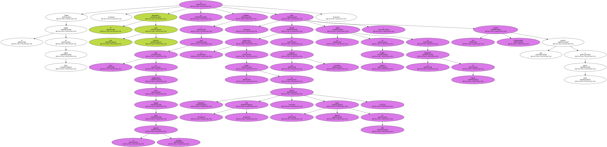Un negro panorama que quizá explique alguna de las contradicciones en que ha incurrido su Gabinete.
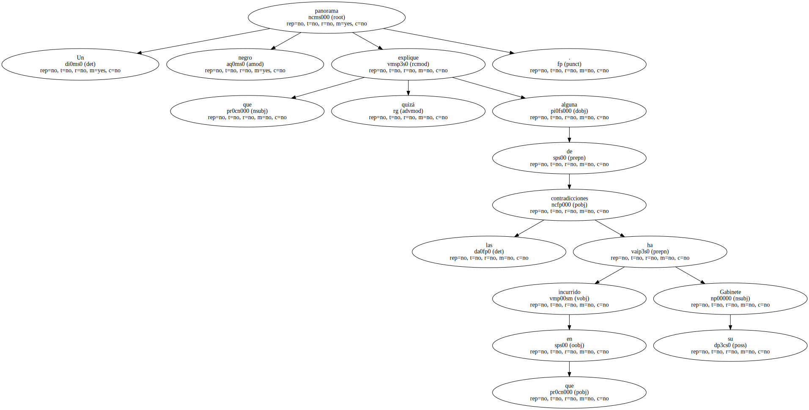Ibarretxe acabó acatando la doctrina oficial del partido y desautorizó a su propio portavoz al desmentir que planeara excluir a la coalición aberzale de su iniciativa de diálogo.

Mientras estrechan el cerco sobre el PNV , tanto Aznar como Mayor Oreja - - su virtual candidato a lehendakari - - saben que , venza quien venza en las próximas elecciones vascas , carecerá de los apoyos suficientes para gobernar en solitario.
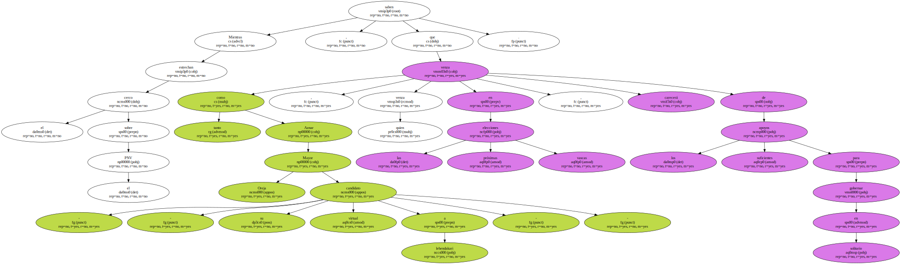De ahí el interés del Gobierno en afianzar una " alternativa de libertad " junto al PSOE , en palabras de Aznar.
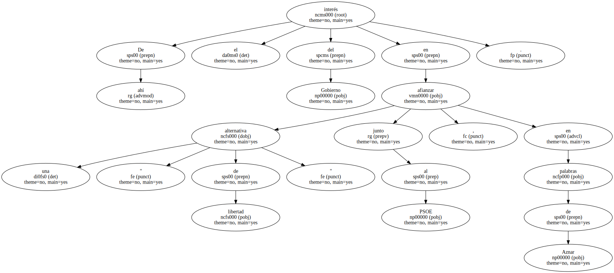Y de ahí también el deseo de los socialistas de mantener el consenso antiterrorista y constitucional con el PP pero , al tiempo , explorar vías de acercamiento al PNV.
Sólo así , compaginando la defensa.